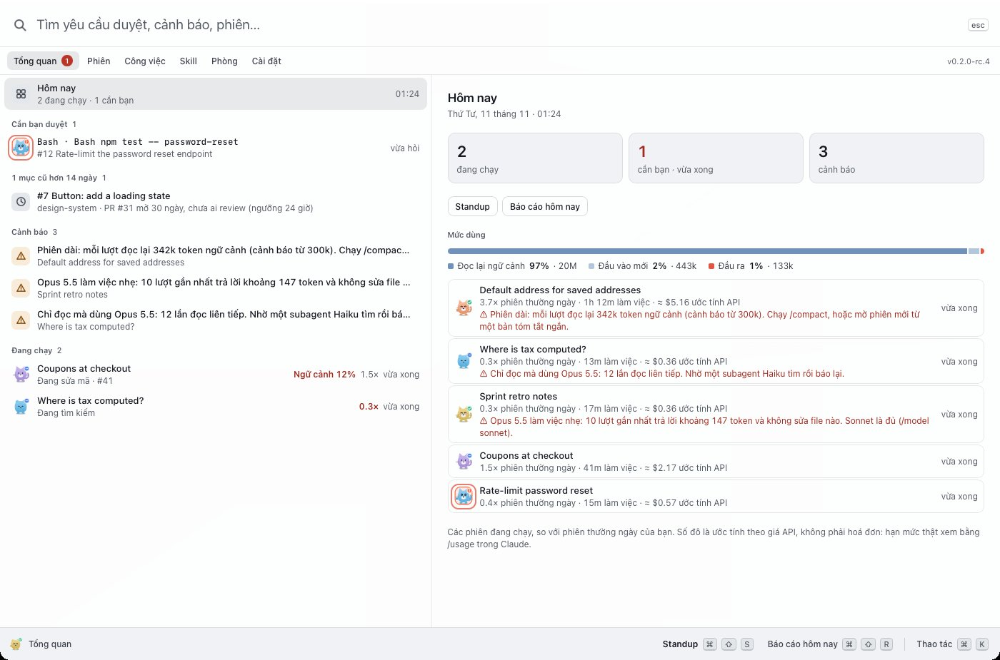
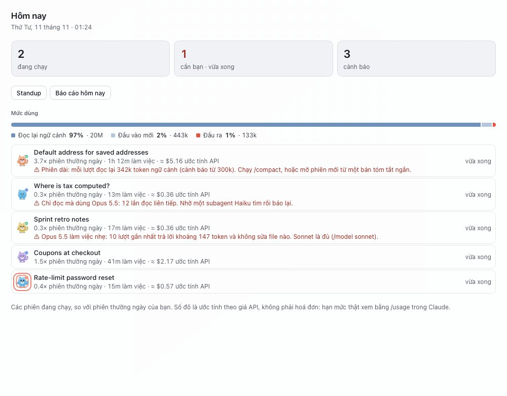
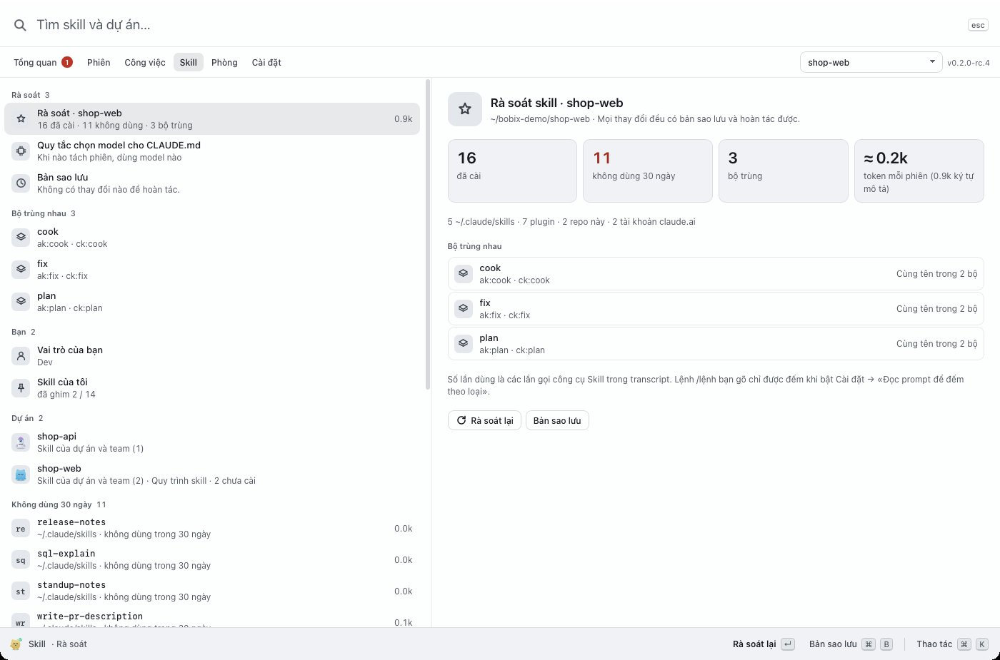

Trợ lý cá nhân giúp bạn làm việc tốt với Claude Code
Mọi session.
Nhìn là biết.
Mỗi session là một chú thú trên màn hình. Duyệt yêu cầu mà không phải chuyển cửa sổ, xem mỗi session dùng bao nhiêu so với mức thường ngày của bạn, giữ bộ skill gọn gàng, và chạy ticket của bạn.

Chú thú
Mỗi session một chú thú.
Mỗi session đi dọc mép màn hình bạn chọn. Liếc một cái là biết con nào đang bận, con nào đang chờ bạn. Bấm vào chú thú để vào đúng session đó.
Đang bận một việc. Chỉ chuột vào để xem nó đang làm gì.
Các chú thú ở cuối trang này là thật. Kéo thử, búng thử, hoặc chạm vào một con.
Duyệt yêu cầu
Trả lời Claude mà không phải tìm terminal.
Khi Claude xin quyền, bạn trả lời ngay trên chú thú, trong bảng điều khiển hoặc trên thông báo (macOS). Yêu cầu chờ lâu nhất lên đầu, yêu cầu xoá hoặc ghi đè dữ liệu được đánh dấu. Thử đi: chú thú ở cuối trang đang chờ bạn.
npm test trong demo-appGia đình
Session phụ đứng cạnh session gốc.
Session phụ đi ngay sau session đã tạo ra nó, nên bạn thấy ai bắt đầu việc gì.
Dự án
Năm chú thú. Mỗi dự án một chú.
Bobix, Nota, Tty, Miso và Ship. Các session của một dự án dùng chung một mẫu, mỗi session một màu riêng.
Chỉ chuột vào chú thú
Việc của nó, ngữ cảnh, chi phí.
Chỉ chuột vào để xem nó đang làm gì và còn bao nhiêu ngữ cảnh. Bấm để mở session trong app Claude, Terminal, iTerm hay VS Code.
Bấm để mở session ›
Không vướng víu
Hoặc chỉ hiện chú thú khi nó cần bạn.
Chọn màn hình, mép, kích thước và độ rõ. Chú thú mờ đi khi chuột tới gần và để cú bấm đi xuyên qua.
Mức dùng và skill
Hơn một chú thú.
Bobix đọc các transcript mà Claude vốn đã ghi trên máy bạn. Nó báo sớm khi một session bắt đầu tốn kém, và giữ bộ skill của bạn gọn gàng.
Mức dùng
Biết khi nào một session bắt đầu tốn kém.
Token, phần dành để đọc lại ngữ cảnh, mọi model đã dùng (cả subagent) và thời gian làm việc, so với mức thường ngày của bạn: “3,7× phiên thường ngày”. Số đô la chỉ là ước tính theo giá API và bạn ẩn được.
- Session quá dài. Mở lại từ một bản tóm tắt ngắn.
- Model nặng cho việc nhẹ. Thử Sonnet.
- Khám phá chỉ-đọc. Giao cho Explore chạy Haiku.

Skill
Rà soát skill, hoàn tác được.
Theo từng dự án: mọi skill Claude nạp, phần mô tả tốn bao nhiêu mỗi lượt, skill không dùng và các bộ trùng nhau. Tắt hoặc xoá skill của bạn chỉ bằng một cú bấm, mỗi thay đổi đều có bản sao lưu và nút Hoàn tác.

Bộ khởi chạy
Một cửa sổ. Toàn bằng bàn phím.
Tìm kiếm, rồi Tổng quan, Phiên, Công việc, Skill, Phòng và Cài đặt.
↑ ↓ di chuyển · ↵ mở · ⌘K mọi thao tác
Ticket
Chạy cả ticket của bạn.
Issue GitHub và GitLab của bạn, đọc qua chính gh và glab của bạn, đặt cạnh các session đang làm chúng.
Cần làm
CODE-31Xuất cài đặt ra JSONGợi ý làm tiếpCODE-34Trạng thái trống cho SkillĐang làm
CODE-27Nút chế độ tốiCODE-29Thử lại khi tải lên lỗiHai session cùng một issueChờ review
CODE-22Tìm kiếm nhanh hơnCODE-18Hết hạn đăng nhậpKẹt: trả lời reviewStand-up và báo cáo hôm nay là văn bản thuần để chép. Bobix không gửi gì đi.
Chỉ khi bạn muốn
Thói quen và phòng họp.
Cả hai chỉ dành cho lúc bạn dùng, và đều đi qua chính Claude của bạn.
Thói quen Mặc định tắt
Yêu cầu bạn lặp lại thành skill.
Mỗi tuần một lần, Haiku đọc các prompt bạn gõ trong 14 ngày qua, tìm những yêu cầu tuần nào bạn cũng làm và soạn nháp một skill. Chỉ khi bấm Duyệt và cài nó mới được ghi, và mọi phiên bản đều hoàn tác được. Việc này gửi văn bản tới Anthropic, qua chính Claude của bạn.
release-notesPhòng Bản sớm
Phòng họp cho một vấn đề.
Giữ phòng qua mạng Tailscale của bạn và mời người vào trò chuyện. Claude của bạn sắp xếp cuộc trò chuyện thành vấn đề, các phương án, ưu và nhược; bạn quyết định. Cần có Tailscale. Chưa thử giữa hai máy thật.
- Vấn đề
- Tải lên lỗi khi mạng chậm
- Phương án
- Thử lại · Tải lên tiếp tục được
- Quyết định
- Của bạn
Thông báo
Báo cho bạn, rồi để bạn tập trung.
Thông báo khi session cần duyệt hoặc xong việc, số session đang chờ trên thanh menu hoặc khay hệ thống, và Đừng làm phiền 30 hoặc 60 phút.
Quy tắc model
Một khối CLAUDE.md, cho xem trước khi thêm.
Khi nào tách session, dùng model nào. Hoàn tác trả tệp về đúng từng byte.
Cập nhật
Cập nhật ngay trong ứng dụng.
Bobix báo khi có bản mới và hỏi trước khi cài.
Ngôn ngữ
Tiếng Anh và Tiếng Việt.
Mọi màn hình, cả hai ngôn ngữ.
Nền tảng
macOS, Windows, Linux.
Một app cho cả ba. macOS được thử bằng tay ở mỗi bản phát hành; hai hệ còn lại được một người thử trên máy thật và chạy trên CI.
Dung lượng
Nhỏ và native.
4 MB
file tải, khoảng 9 MB sau khi cài trên macOS.
Cài đặt
Chạy được sau hai phút.
- Mở file
.dmgrồi kéo Bobix vào Applications. - Bản build chưa được Apple notarize nên lần đầu mở sẽ bị chặn: bấm chuột phải vào app → Open → Open, hoặc chạy
xattr -cr "/Applications/Bobix.app". - Bobix nằm trên thanh menu, không có biểu tượng trên Dock.
Hoặc từ terminal
Lệnh cho chip Apple. Máy Intel thì đổi thành Bobix-mac-x64.dmg. Thoát Bobix trước nếu đang chạy.
curl -fL -o /tmp/Bobix.dmg https://github.com/baonguyen-agilityio/bobix/releases/latest/download/Bobix-mac-arm64.dmg
hdiutil attach -nobrowse -quiet -mountpoint /tmp/bobix-dmg /tmp/Bobix.dmg
rm -rf /Applications/Bobix.app && cp -R /tmp/bobix-dmg/Bobix.app /Applications/
hdiutil detach -quiet /tmp/bobix-dmg && xattr -cr /Applications/Bobix.app && open /Applications/Bobix.app- Chạy file cài. App cài cho riêng tài khoản của bạn, không cần quyền admin.
- File chưa được ký số nên SmartScreen có thể báo “Windows protected your PC”: bấm More info → Run anyway.
- Bobix nằm ở khay hệ thống, có thể trong mũi tên ^.
Hoặc từ terminal
PowerShell.
$f = "$env:TEMP\Bobix-windows-x64.exe"; Invoke-WebRequest https://github.com/baonguyen-agilityio/bobix/releases/latest/download/Bobix-windows-x64.exe -OutFile $f; Start-Process $f- Cài file
.debrồi mở Bobix từ menu ứng dụng. - Trên Wayland, Bobix chạy qua XWayland để chú thú luôn nằm trên cùng.
- Muốn bấm chú thú đưa terminal lên trước thì cài
xdotool. Các bản Linux khác chưa có gói cài.
Hoặc từ terminal
Lệnh cho amd64. Máy ARM thì đổi thành bobix-linux-arm64.deb.
curl -fL -o /tmp/bobix.deb https://github.com/baonguyen-agilityio/bobix/releases/latest/download/bobix-linux-amd64.deb && sudo apt install -y /tmp/bobix.debNút tải luôn lấy bản ổn định mới nhất (hiện là v0.1.3). Các bản thử của 0.2 (hiện mới nhất là v0.2.0-rc.9), có các chú thú và bảng điều khiển mới trên trang này, là bản phát hành thử: chọn trong tất cả bản phát hành. macOS là nơi mỗi bản phát hành được thử bằng tay; Windows và Linux được một người thử trên máy thật và chạy trên CI, chỗ nào còn lỗi thì ghi ở phần giới hạn đã biết trong lộ trình.
Rồi kết nối Claude Code
- Mở BobixLần đầu, bảng điều khiển mở ở trang Kết nối.
- Bấm Cài hooksBobix thêm hooks vào
~/.claude/settings.json, giữ nguyên các hook khác và lưu bản backup. - Gửi một promptTrong session Claude Code bất kỳ. Chú thú của nó sẽ xuất hiện.
Muốn xem trước? Gửi sự kiện thử trong trang Kết nối hiện một session giả.
Gỡ cài đặt
- Kết nối → Gỡ hooks. Chỉ các hook của Bobix bị xoá.
- Cài đặt → tắt Tự mở khi đăng nhập máy.
- Thoát từ biểu tượng ở khay / thanh menu rồi xoá app.
- Dọn thêm nếu muốn:
~/.claude/bobix/, các bản backup~/.claude/settings.json.bak-bobix-*và thư mục cài đặt (~/Library/Application Support/Bobix,%APPDATA%\Bobixhoặc~/.config/Bobix).
Không có Node.js
Hook dùng curl hoặc PowerShell. Mọi thứ vẫn chạy, trừ một điều: mở một session (bấm vào chú thú, Mở phiên trong bảng điều khiển, trên thẻ của chú thú hoặc ở khay hệ thống, ⌘K ↵) sẽ hiện chi tiết hoặc báo lý do thay vì đưa cửa sổ của nó lên trước. Cài Node.js rồi bấm Cài lại trong Kết nối để có lại.
Gặp lỗi khi cài? Xem hướng dẫn cài đặt.
Riêng tư
Chạy trên máy bạn.
Ở lại trên máy bạn.
- Không tài khoản
- Không đăng ký, không analytics.
- Chỉ trên máy này
- Hook chỉ nói chuyện với Bobix qua 127.0.0.1, kèm token riêng của từng người dùng. Một Phòng bạn làm chủ thêm một cổng, chỉ ở địa chỉ Tailscale của bạn.
- Không bao giờ nội dung
- Tên tool, đường dẫn file hoặc lệnh, prompt của bạn. Không bao giờ gửi nội dung file hay kết quả tool.
- Bạn bấm, nó mới đổi
- Mọi thay đổi đều có bản sao lưu và nút Hoàn tác.
- Mạng, mặc định
- Issue của bạn qua chính
gh/glabcủa bạn, và mỗi ngày kiểm tra có bản mới không. Không gửi gì về bạn, và mỗi việc đều tắt được. - Gửi tới Anthropic
- Chỉ cho những tính năng bạn bật hoặc bấm, qua chính Claude của bạn. Không bao giờ gửi file mã nguồn của project bạn.
- Lưu giữ
- Session chỉ nằm trong bộ nhớ. Với session đã xong, các con số về mức dùng (không bao giờ là văn bản) nằm trong một tệp bạn xoá được.
Mọi thứ Bobix đọc, ghi và chạy: Quyền riêng tư và bảo mật ›